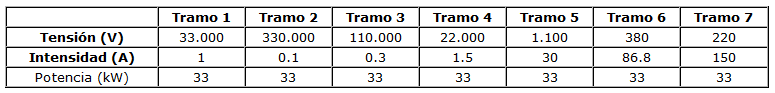

3.1. Una cuestión de potencia
Cómo transformar la tensión
Como hemos visto en el apartado anterior, para cambiar la tensión de transporte tenemos que utilizar un transformador.
¿Quieres saber cómo funciona un transformador? ¡Mira este vídeo!
Vídeo de José Antonio Yajure en YouTube. Licencia CC.
En la tabla siguiente puedes observar el ejemplo de algunas combinaciones de tensiones e intensidad con las cuales se puede transportar una determinada potencia eléctrica. Recuerda que si medimos en voltios (V) y amperios (A) la tensión y la intensidad, obtenemos la potencia en vatios (W), y observa cómo el producto de la tensión por la intensidad en cada tramo siempre es el valor de la potencia transmitida:

Elaboración propia
Habrás observado en la tabla anterior que la potencia viene expresada en kW, por lo que tendrías que multiplicar su valor por 1000 para comprobar que el producto de tensión por intensidad es el valor constante de la potencia transmitida.
Comprueba lo aprendido
En cada una de las afirmaciones siguientes, completa las palabras que faltan eligiendo una de la lista siguiente:
transformadores, potencia, amperios, elevan, salida, cuadrado, reduce, devanado, veinte, distribución, usuarios, intensidad, entrada, Joule
Ten en cuenta que el calificador distingue entre mayúsculas y minúsculas: ¡pon cuidado en elegir correctamente!
Obra publicada con Licencia Creative Commons Reconocimiento Compartir igual 4.0